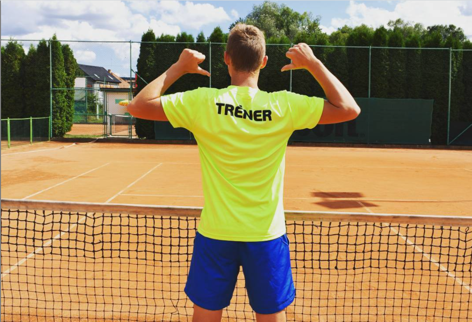
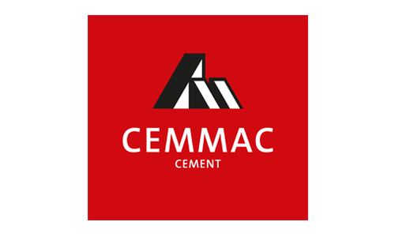
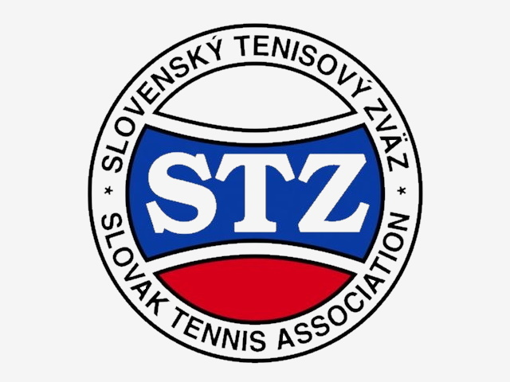
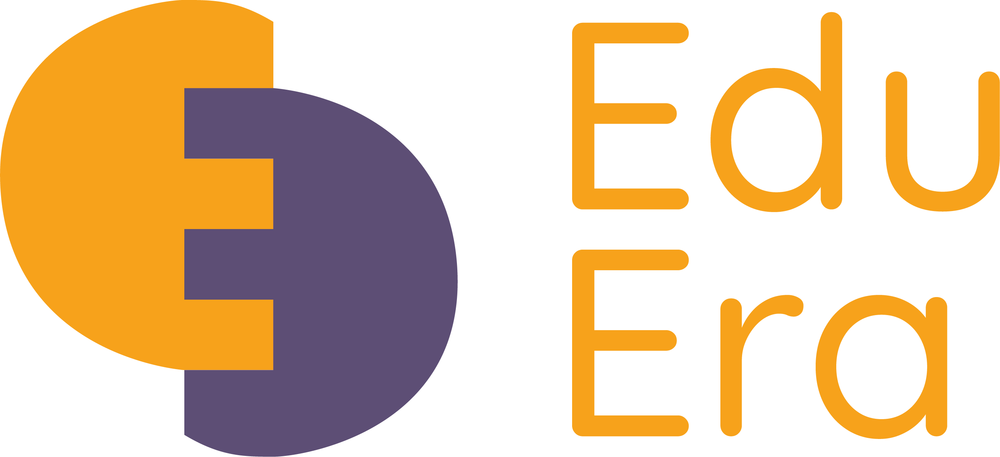

Vysoká škola
2020 - súčastnosť
VUT FIT v Brne
Informační technologie
Stredná škola
2016 - 2020
Gymnázium Dubnica nad Váhom
Študent, športovec, tréner, rozhodca, dobrovoľník, pracovník s mládežou
Volám sa Dalibor a mám 20 rokov. Aktuálne študujem na VUT FIT v Brne a počas štúdia sa venujem tenisu a dobrovoľníctvu.
Svoje štúdium sa nažím obohať o samovzdelávanie v oblasti projektového manažmentu a marketingu. Kedže študujem infomratiku, IT a nové technológie sú mojou vášňou a pracujem s nimi každý deň. Som veľmi aktívny a zodpovedný človek, ktorý svoje poninnosti rieši čo najskôr, pretože neznášam časový stres a nerád sa doňho dostávam.
Verím, že som správny človek do pracovného tímu. Kedže som extrovert, rád poznávam nových ľudí a rýchlo sa začleńujem do nových komunít. V tíme pracujem už viac ako rok v organizácií EduEra. Tieto skúsenosti ma posúvajú dopredu a robia zo mňa študenta so skúsenostami, znalosťami a praxou.
2020 - súčastnosť
VUT FIT v Brne
Informační technologie
2016 - 2020
Gymnázium Dubnica nad Váhom
| Dátum | Názov certifikatu | Inštitúcia |
|---|---|---|
| 2021 | Projektový manažment modul II | IUVENTA |
| 2020 | Projektový manažment modul I | IUVENTA |
| 2020 | Projektový manažment | ZIPCEM - Bojnice |
| 2020 | DOFE - Bronzová úroveň | Medzinárodná cena vojvodu z Edinburghu |
| 2020 | Národný tenisový rozhodca 2. úroveň | STZ (Slovenský tenisový zväz) - Bratislava |
| 2018 | Národný tenisový rozhodca 1. úroveň | STZ (Slovenský tenisový zväz) - Žilina |
| 2018 | Certificat of Tennis Officiating National Level School | STZ (Slovenský tenisový zväz) - Bratislava |
| 2018 | Youthpass (Erasmus+ projekt: Leisure and Pleasure - Maďarsko) | European Commision |
| 2017 | Youthpass (Erasmus+ projekt: Democracy = make it better - Poľsko) | European Commision |
2018-2020
Trénovanie detí tenis, práca s mládežou
Leto 2018,2019,2020
Asistent v skladoch CEMMAC a.s.
2020
Halové regionálne majstrovstvá Dorastu - OZ ŠK Púchov
2020
Letné regionálne majstrovstvá Dorastu - OZ ŠK Púchov
2020
BIBI CUP TKM Madunice
2019
Turnaj triedy "D" (Dorast) - TK Raketa Nedožery-Brezany
31.10.2020 - súčastnosť
Marketingový asistent
Asistencia pri tvorbe marketingových kampaní
1.4.2020 - 31.10.2020
Projektový asistent
Tvorba a písanie žiadostí o grant pre projekty pre program Erasmus+ a Európskeho zboru slodarity
2018
ITS CUP M15 Olomouc - ITF international man tennis tournament
- Chair Umpire
2018
ITF World junior tennis finals - Prostejov
- Chair Umpire


Vo svojom voľnom čase sa venujem samovzdelávaniu, priateľom a hlavne športu. Od útleho veku trenujem tenis a od 10 rokov ho hrávam závodne. Vo svojej tenisovej kariere som získal mnoho úspechov na národnej úrovni ako závodný tenisový hráč a pár úspechov ako národný a medzinárodný tenisový rozhodca. Kedže som komunikatívny človek, rozhodol som sa začať trénovať deti tenis. Deti trénujem už druhý rok a podarilo sa mi z nich spraviť závodných hráčov, ktorí získali už svoje prvé vítazstvá. Tenisu je mojou súčastou. Venujem sa mu ako závodný hráč, aj ako tréner, aj ako rozhodca.
Popri tenisu som súčasťou volejbalovej komunity, s ktorou stretávame a za priaznivého počasia chodievame hrávať volejbal.
Šport nie je jediný, čomu sa venujem. Vo svojom voľnom čase dobrovoľničím v občianskom združení Eduera, v ktorej som 6 mesiacov pôsobil ako projektový asistent, no následne som sa presunu na post marketingového asistenta. Eduera pôsobí ako informačné centrum pre mládež v Košickom kraji a ako platforma pre neformálne vzdelávanie mládeže. Tvoríme projekty ako Eramus+ mládežnícke výmeny, školenia pre mládež, Eramus+ treningy, projekty Európskeho zboru solidarity a mnohé ďalšie vzdelávacie podujatia. Baví ma pracovať s ľudmi, a podľa toho prisôsobujem svoje aktivity.
| Meno: | Dalibor Králik |
| Telefónne číslo: | +421 910 329 130 |
| Email: | dadokralik@gmail.com |
| Mesto: | Nemšová |
| Krajina: | Slovenská republika |